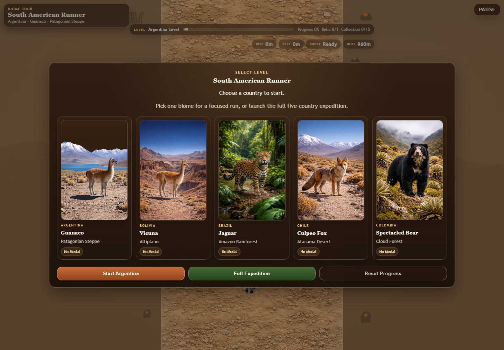

Problema
Transformar una idea de runner en una experiencia reconocible para portfolio: debe verse jugable, tener identidad regional, progresion clara y abrir directo sin build ni backend.
Runner web por biomas sudamericanos. La demo combina cinco niveles jugables, arte local por pais, audio, clima, obstaculos ecologicos, coleccionables, medallas, guardado local y controles tactiles.

La demo interactiva completa queda preservada en el paquete completo/local. Esta version para hosting muestra la ficha y captura para mantener una carga publica liviana.
Transformar una idea de runner en una experiencia reconocible para portfolio: debe verse jugable, tener identidad regional, progresion clara y abrir directo sin build ni backend.
Usar Canvas y JavaScript modular con assets locales. El proyecto evita dependencias pesadas y mantiene una demo estatica que se puede servir desde el hub o abrir en cualquier servidor HTTP.
Juego navegable con selector de bioma, expedicion completa, progreso persistente, medallas por nivel, musica por pais, controles tactiles y pantalla de reporte al finalizar.
Argentina, Bolivia, Brazil, Chile y Colombia tienen animal, atmosfera, obstaculos y arte propio.
Tres carriles, salto, slide, rescate, power-up, ventanas de input y colisiones depurables.
Mejor distancia, medallas, reliquias y mastery quedan guardados en el navegador.
Sprites, fondos, musica y guias de direccion convierten la demo en pieza presentable.